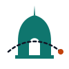
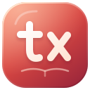

To’rabek Raufov · personal space
Built with intent.
Always curious.
Entrepreneur. Full-stack developer
Project manager. Design enthusiast.
From the first idea to the final detail.
Explore my work
TourfixerTravel tech, close to my heart.Explore ↗AdvoAIAn idea out in the world.Explore ↗G↗GoPravaThe story ↗
txieltsIELTS practice, open to everyone.Explore ↗Let’s talk.Projects, ideas, and interests.
Touch one. See where it takes you.
Touch one. See where it takes you.